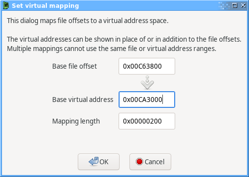
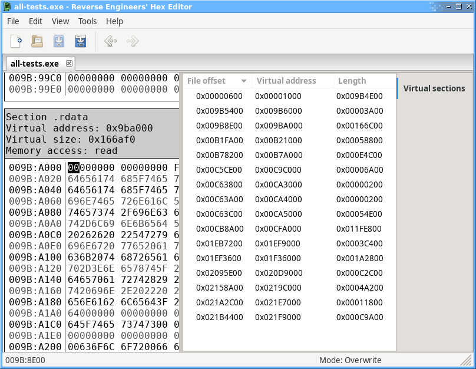

Virtual Address Mapping
The virtual address mapping function allows you to map sections of a file into a virtual address space, for example to map code or data sections in an executable to the memory addresses they would normally be loaded into.
To create a mapping, select a range of bytes in the main view and choose Set virtual address mapping... from the context menu (right click) to access the virtual mapping dialog:

Once at least one mapping has been created, you can select Display virtual sections in the View menu to work with the file sections in the virtual address space rather than the real file offsets. The currently defined mappings can be seen in real or virtual sections view using the Virtual sections tool (View menu > Tool panels > Virtual sections).
Virtual mappings are saved alongside the original file in a .rehex-meta file along with other metadata.
The screenshot below shows a file with virtual sections and comments set up by the PE EXE/DLL analysis plugin:
